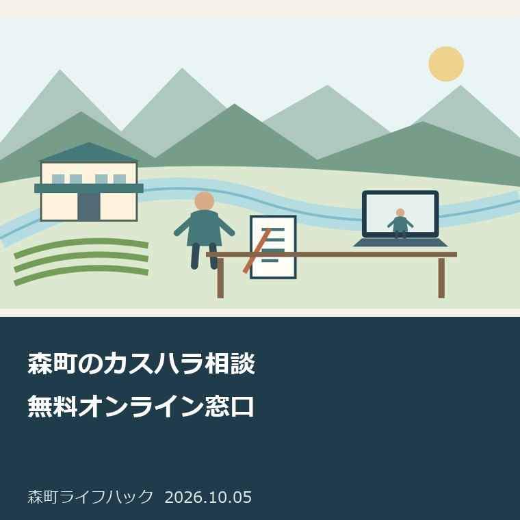
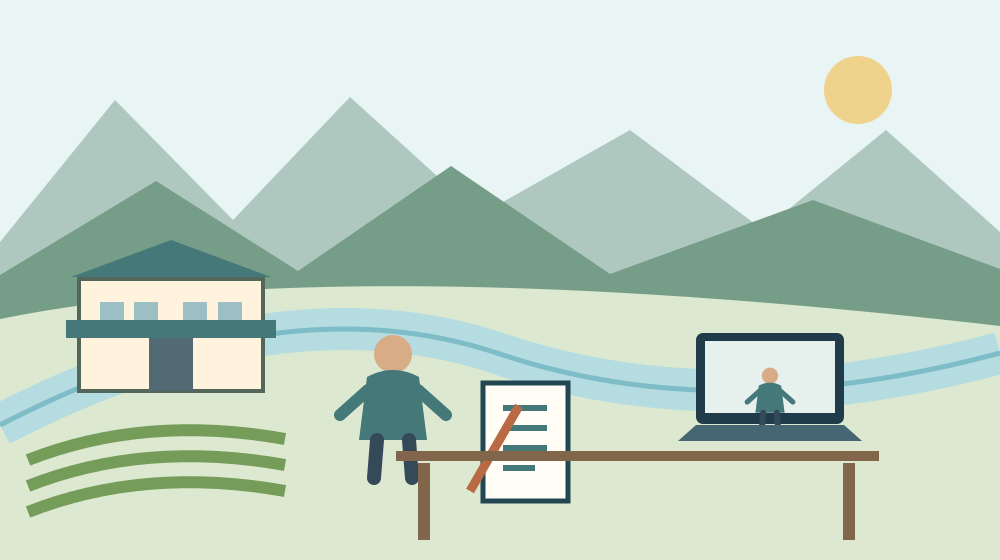
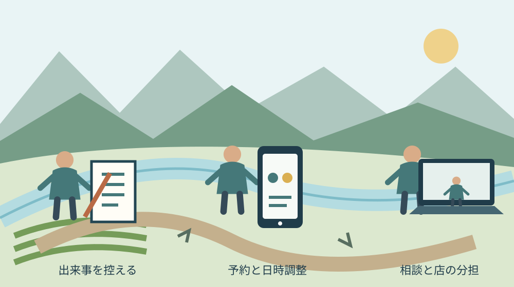

月曜・手続きと家族の段取り
森町のカスハラ相談｜無料オンライン窓口

Q. 店の顧客対応がつらい。森町から専門家へ相談できる？
A. 森町の事業者は、静岡県の無料オンライン相談窓口を利用できます。2026年7月～2027年2月の完全予約制で、申込後の聞き取りを経て日時を調整します。相談員は記録や初動対応の整理を助言しますが、代理交渉や訴訟代理は行いません。まず出来事の日時と要求内容を控えます。
静岡県の予約相談を森町から使う
静岡県の「カスタマーハラスメントの防止について」は、県内の事業者、県内で働く方、取引の相手方となる顧客を対象に、無料オンライン相談窓口を案内しています。2026年10月5日に本文を確認しました。実施期間は2026年7月から2027年2月までで、森町の小規模事業者も県内の事業者として相談の入口を使えます。
森町で店やサービスを続ける方は、仕入れ、接客、経理に加え、苦情への対応も引き受けています。店の人数が少なければ、話を受ける人と営業を続ける人を簡単に分けられません。私は、その負担を先に認めたいと考えます。地域を支える商売を、一人の我慢だけで続ける形にしてはならないと思います。
県の窓口は完全予約制です。申込フォームから申込み、事務局の聞き取りを経て相談日時を調整します。画面を開けば直ちに専門相談員とつながる仕組みではありません。県公式ページにあるフォームへのリンクを入口とし、受付と実際の相談を別の段階として予定へ入れます。
私は、相談前に「カスハラかどうか」を店主だけで決め切る必要はないと考えます。該当性の整理も相談内容に含まれるためです。正当な苦情を含め、何が起きているかを持ち込む入口として使います。この記事は特定の顧客や出来事をカスタマーハラスメントと認定するものではありません。
申込みから日時調整までを分ける
静岡県のカスタマーハラスメント対策相談窓口は、申込み後に事務局の株式会社東海道シグマが簡単な聞き取りを行い、その後に日時を調整する流れです。相談の時間帯は平日11時から19時まで。土日祝日と12月29日から1月3日は除かれます。希望時間を送ったことと、相談日時の確定は区別します。
私は、申込みの前に連絡を受けられる時間を二つほど控える方法を勧めます。営業中に電話を取れないなら、その事情を聞き取りの段階で伝えます。これは県が指定する申込項目ではなく、店の準備の提案です。折返しを待つ人と店の対応を続ける人を決め、申込み後の連絡が止まらないようにします。
県の案内は1枠60分、毎月2回実施、1日あたり2枠です。平日11時から19時まで常時相談員が待機しているとは読めません。現在の空き枠や申込みから相談までの日数は、本文では確認できませんでした。希望日がある場合も、その日を前提に人員や営業の予定を確定するのは、日時調整の後にします。
予約の要否で窓口を分ける考え方は、森町の相談窓口の予約を整理した記事でも扱いました。私は、電話番号があるから当日相談できると思い込まず、申込先、調整担当、当日の接続方法を別に見る方がよいと考えます。今回の専門相談は県の案内に沿って予約します。

60分に持ち込む出来事の記録
県の相談員が助言する内容には、記録・証拠の整理が含まれます。私は、60分を相手の説明だけで使い切らないよう、出来事の日時、場所、連絡方法、要求された内容を一枚に並べる準備を提案します。感情を消すためではありません。相談員がどの場面について助言すればよいかを見つけるためです。
記録は「ひどかった」という評価と、実際に言われた言葉を別に書きます。私なら、発言を覚えている範囲で記し、正確に思い出せない部分にはその旨を付けます。相手の要求、店が返した説明、会話が終わったかを分けます。足りない記憶を補って、実際にはなかった発言を記録する方法は取りません。
繰返し連絡がある場合は、一回目から順に日付を置きます。電話、メール、店頭で話が続いていれば、同じ出来事に番号を付けます。私は、最新の一件だけを切り出すより、要求が変わったか、店が同じ説明を繰り返しているかを見られる形を勧めます。経緯を説明できれば、初動と継続対応を分けて質問できます。
メールや画像等は元の状態を保管し、相談に使う写しを分けるのが私の提案です。顧客情報を家族や従業員全員へ無制限に送る必要はありません。相談で共有する方法と範囲は事務局へ確認します。録音や証拠の扱いに個別の法的判断が必要なら、この記事だけで適否を決めず、専門家へ尋ねます。
窓口が行うことと行わないこと
静岡県は、弁護士や社会保険労務士等の専門相談員が、カスハラ該当性の整理、初動対応、記録・証拠の整理、社内対応方針やマニュアル整備を助言するとしています。相談の目的は、自分の店が次に何を確認し、どう対応を整えるかを考えることです。相手へ代わりに要求を伝えるサービスとは区別します。
県の案内は、相手方との代理交渉、個別事案の法的判断の断定、損害賠償請求、訴訟代理などを行わないと明記しています。意外に感じる方もいると思いますが、弁護士等が相談員にいることと、店の代理人になることは別です。無料相談を予約しただけで、交渉や裁判の依頼まで済んだとは扱えません。
私は、質問を「相手をどうするか」だけにせず、「店の誰が話を受け、どこで対応を区切るか」に置く方がよいと考えます。受付を担当する人へどこまで判断を任せるか、責任者へ渡す条件は何かを尋ねます。店が安全に営業を続けるための分担なら、相談の助言を具体的な動きへつなげやすくなります。
危険が迫っている場面を、予約相談の日まで待つ段取りにはしません。私は、身の安全の確保と落ち着いて対応方針を整理する相談を別に考えます。緊急時は警察等の緊急対応先を使います。県の月ごとの予約枠は、即時の出動やその場の仲裁を担う窓口として案内されているわけではありません。
森町の他の相談との違いを押さえる
森町の「暮らしの相談窓口」と「森町消費生活相談員について」は、住民の相談や商品・サービスの契約トラブルの相談を案内しています。今回の県の予約相談とは、対象と目的が同一ではありません。店が顧客対応を整えたい相談と、購入した人が契約上の困りごとを相談する入口を分けて選びます。
森町の消費生活相談員の案内は、森町在住の方を対象に、来庁または電話の相談を受け付けるとしています。私は、店主だから消費生活相談を使えないと一律には考えません。本人が消費者として困る場面もあるからです。ただし、事業上の顧客対応について今回使うのは、県の専用の予約相談という整理です。
既存の森町の消費生活相談の記事は、購入した商品やサービスの契約に困る住民側の入口を扱っています。カスハラ相談と名称だけで取り替えないでください。私は、相談する人の立場、相手との関係、何を整理したいかを一行にしてから窓口を選ぶ方法を勧めます。
従業員の労働条件や職場の問題が中心なら、労働相談も別の入口です。9月16日の労働相談を扱った記事の開催日は既に過ぎています。今回の予約日として流用しません。県の現行案内を見ながら、顧客対応の相談と労働上の相談を分け、必要な窓口へつなぎます。
良い点｜移動と一人で抱える負担を減らせる
静岡県の無料オンライン相談は、店から専門家への相談の入口を持てる仕組みです。私は、森町の事業者が移動のために店を長く閉める必要を減らせる点を評価します。現地へ出向く相談だと、交通だけでなく留守を守る人の手配も要ります。オンラインは、その部分の負担を軽くできる可能性があります。
相談料が無料であることも、小さな店には使いやすい条件だと考えます。私は、売上や人員に余裕が出るまで相談を後回しにする形を避けたいと思います。相談料と、通信環境の準備や担当者の時間は別ですが、費用を気にして入口へ進めない負担を減らす点は、具体的な利点として受け止められます。
該当性の整理からマニュアル整備まで相談内容が示されている点も評価します。私は、出来事を「我慢するか、店を閉めるか」という二択にしない方がよいと考えます。記録、初動、分担という途中の工程を助言してもらえるなら、店が次に動ける部分を見つけるための材料が増えます。
県の対象には顧客となる方も含まれています。私は、店だけの言い分を正しいとする窓口とは受け止めません。正当な要望と働く人への負担を分けて考える余地がある点を評価します。事業者側も、商品や説明に改善すべき部分があるなら、それを記録へ残します。相談は自分に都合のよい証拠だけを集める作業ではありません。
注文したい点｜予約枠と店の営業を両立させる
県のカスハラ相談は月ごとの限られた枠で運用されます。私は、無料の入口を整えた点を評価した上で、申込みから日時調整までの見通しが利用者に伝わると助かると考えます。小さな店は一人抜けるだけで接客の担当が変わるため、相談の待ち時間も営業の段取りへ影響するからです。
現在の公式本文からは、空き枠、待機日数、希望日に合わない場合の扱いを確認できません。私は、ここを「すぐ相談できます」と言い換えません。事務局からの連絡で実際の予定を確かめます。申込み後に状況が変わった場合も、相談まで何もできないと考えず、記録と店内の安全な分担を進めるのが提案です。
オンラインなら誰も準備しなくてよい、という扱いにも注文があります。私は、接続できる端末、周囲に会話が聞こえない場所、相談中の接客担当を先に確認する方がよいと考えます。通信の動作確認や接続案内の方法は、事務局からの連絡に従います。県本文だけでは使用する会議サービスの詳細は確認できませんでした。
私は、店主が一人で相談を受け、帰ってから従業員へ結果を押し付ける形にも迷いがあります。相談の内容には個人情報もあるため、全員参加がよいとは言い切れません。だから、相談に参加する人と、助言を店の運用へ戻す人を分けて決めます。共有は必要な部分だけにし、誰が何をするかを明確にします。
対案・結論｜日時と要求内容から書き始める
森町の事業者が今日できる一歩は、相談したい出来事の日時と要求内容を書き出すことです。私は、まず最新の一件について、いつ、どこで、何を求められ、店は何と答えたかを四行にする方法を提案します。まだ資料が全部そろわなくても、この一件があれば、何を専門家に尋ねたいかを考えられます。
次に「困っていること」と「相談で知りたいこと」を別に置きます。私なら、電話が長く続くという事実と、誰へ引き継ぐ基準を知りたいという質問を分けます。相談員が助言する範囲に沿って、記録の残し方、初動の区切り、社内の方針のうち、今回優先する項目を一つ選びます。
申込みは、静岡県のカスタマーハラスメント相談の公式案内から進みます。フォームへ送った内容と送信日を控え、事務局の聞き取りに備えます。これは予約の確定を意味しません。連絡が来たら、営業への影響と相談に参加できる時間を照合します。
相談を終えた後は、助言をそのまま貼るのでなく、自分の店で動かせる手順へ直すのが私の提案です。受付担当が責任者へ渡す条件、記録の保管先、次に見直す日を一つずつ決めます。個別の法的判断や代理交渉が要る場合は、この予約相談の範囲を越えるため、別の専門家への依頼を確認します。

相談の後に店へ残す分担表
カスハラ相談で整理した対応は、店主だけが知っている状態だと店の仕組みになりません。私は、顧客の氏名や出来事の詳細を全員へ配るより、受付、引継ぎ、記録、確認の担当を小さな表にする方がよいと考えます。相手の要求に答える権限と、話を受ける役割を同じ人へ押し付けないためです。
私なら、通常の要望は誰が答えるか、判断できない要求は誰へ渡すかを別にします。不在のときの連絡先も決めます。ただし、相談員の助言や個別の安全判断を確認せず、一律に通話を切る時刻や一方的な拒絶文を作りません。店の業務内容に合う対応かを、必要に応じて専門家へ確かめます。
記録を保管する人は、退職や担当交代の際にも参照できる方法を考えます。私は、個人のスマホだけに顧客対応の履歴を残す形を避けたいと考えます。閲覧できる人、保管期間、外部へ渡す場合の確認を決めます。便利さのために不特定の人が読める共有先へ置く方法は勧めません。
分担表を作ったら、担当者が実際に使えるか一度確認します。私は、休みの日にも同じ一人へ電話が集まるなら、表があっても負担は減っていないと考えます。予備担当の連絡方法まで試し、無理な部分を直します。地域の店を続けるためには、助言を受けた事実より、翌日の営業で動く形を残すことが必要です。
大石の視点｜苦情対応を一人の我慢で回さない
私は大石浩之（磐田市／不動産業）です。小さな商売では、目の前の相手に説明する仕事と、本来進めたい業務を同じ人が担う場合があります。ここで述べるのは私の判断であり、森町の店からカスハラの相談を受けた実話ではありません。今回使える体験素材がないため、窓口の事実と私の意見を分けています。
私は、苦情対応を一人の我慢で回す店は続かないと考えます。相手の話を丁寧に聞くことと、際限なく担当者の時間を使うことは別です。誰がいつ責任者へ渡すかを決める方が、働く人の負担を家計と営業の段取りへ戻せます。人柄の強さに期待して放置しない。これが今回の私の言い切りです。
私にも、顧客との関係をどの場面で区切るべきかは、記録なしでは分かりません。店の説明不足があるのか、要求が繰り返されているのかで判断材料が違うからです。だから、相談の入口があることを歓迎しても、記事から個々の相手を断罪しません。事実を持ち込んで、対応の選択肢を確かめます。
今日の成果は、完璧な対応マニュアルの完成ではなく、日時と要求内容が一件分書けた状態です。そのメモを予約相談へつなぎ、次に店で動く担当を決めます。森町で商売を支える人が、営業を守りながら相談できる段取りを増やす。私は、小さな店ほど、この順番を大事にしたいと考えます。
よくある質問
森町のカスハラ相談｜無料オンライン窓口について、対象、期限、確認の入口を3問で整理します。回答は2026年10月5日に確認した公表本文に基づきます。
森町の小さな店でも無料相談を使えますか？
静岡県の窓口は県内の事業者、県内で働く方、取引の相手方となる顧客を対象としています。森町の小規模事業者も県内の事業者として利用の入口を使えます。2026年7月から2027年2月の完全予約制で、申込み後の聞き取りを経て日時を調整します。空き枠や待機日数は事務局へ確認します。
相談員が顧客との交渉を代わってくれますか？
県の案内は代理交渉、個別事案の法的判断の断定、損害賠償請求、訴訟代理などを行わないとしています。相談員は該当性、初動、記録・証拠、社内対応方針の整理を助言します。弁護士等が相談員にいることと、店の代理人への依頼は別です。交渉や訴訟が必要なら別の専門家への依頼を確認します。
申込み前に何を用意すればよいですか？
県が公表した必須書類の一覧とは別に、出来事の日時、場所、要求内容、店が返した説明を一枚にする準備を提案します。記憶が曖昧な部分は未確認と残し、メール等は元の状態を保管します。相談したい質問と連絡を受けられる時間も控え、事務局からの聞き取りと日時調整に備えます。
参考にした公式情報
- カスタマーハラスメントの防止について｜静岡県公式ホームページ（2026年10月確認・本文照合日10月5日）
- 暮らしの相談窓口／静岡県森町（2026年10月確認・本文照合日10月5日）
- 森町消費生活相談員について／静岡県森町（2026年10月確認・本文照合日10月5日）
最終確認日：2026-10-05
制度、期限、数値、画面、開催内容は変更される場合があります。最新の公式案内を確認してください。個別の法律・医療・税務・登記等の判断は、担当窓口や各分野の専門家へ相談してください。